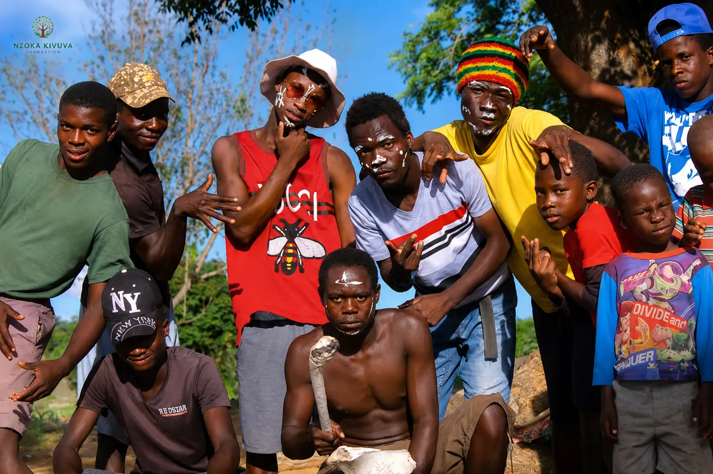

Real stories from the field — tournaments, scholarships, community outreach, and the young lives we're transforming across the region.

The Nzoka Kivuva Foundation officially launched the Mwala Under-17 Football League, bringing together 12 teams from across Machakos County. The tournament aims to foster unity, discipline, and talent development while keeping young people engaged in productive activities.
Read full story Development
Development
Discover how our youth programs are directly contributing to the UN Sustainable Development Goals — proving that local action creates global impact.
Read more Transparency
Transparency
Learn how we operate with complete financial transparency — showing exactly where donations go and how we track impact in Machakos County.
Read more Community
Community
How we're empowering youth to participate in governance and lead development initiatives that create lasting change in their communities.
Read more
MentorshipHow our mentorship program is connecting young people with experienced professionals to guide them from education to meaningful careers.
Read more Sports
Sports
How we're identifying and mentoring young athletes in Machakos County, creating pathways for them to succeed on and off the field.
Read more Education
Education
Discover how vocational training is equipping young people with practical skills for sustainable livelihoods and economic independence.
Read more Community
Community
How our sports programs are providing a safe and structured environment for young people, reducing drug abuse and crime in rural communities.
Read more Development
Development
How we're bridging the digital divide by equipping rural youth with tech skills for remote work and the global digital economy.
Read more Education
Education
How our sports-linked scholarships are keeping vulnerable students in school and creating pathways to academic and sporting excellence.
Read more Sports
Sports
The official launch of the Mwala Under-17 Football League, bringing together 12 teams to foster unity, discipline, and talent development.
Read more Education
Education
Tuition support and learning materials awarded to academic achievers excelling in sports across 12 schools in the county.
Read more Community
Community
Mental resilience, leadership, and positive role modeling workshops held in partnership with local community leaders in Kabaa.
Read more
Sports
Local coaches equipped with modern techniques, child protection protocols, and fair play principles to nurture grassroots talent.
Read more
Sports
Promoting gender equality and youth participation through sports, with 8 girls' teams competing in the inaugural season.
Read more
Education
Youth gain practical skills in tailoring, carpentry, and agribusiness through partnerships with local vocational institutions.
Read moreFree health screenings, nutrition education, and mental wellness support provided to over 300 students across five schools.
Read more
Development
Community partnership leads to the development of a safe play environment for youth in Machakos County.
Read more
Sports
Over 500 students from 24 schools participated in football, volleyball, and athletics competitions.
Read more